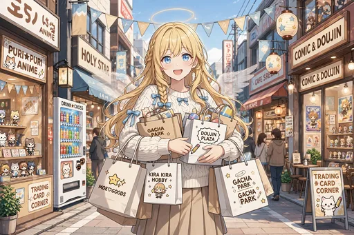
ノーマル
オタロードを紙袋いっぱいで歩く
オタロードを紙袋いっぱいに歩く場面。買い物の成果を両手に提げた足取りは軽く、もう立派な常連の貫禄です。第2弾、日本橋にどっぷり浸かる日々の幕開け。
第2弾「日本橋どっぷり編」のカード全30種です。オタロード歩きやクレーンゲーム、推しの誕生日祭壇づくりなど、推し活全開の日々の場面です。
カードの画像はWeb鑑賞用サイズです。原画の高解像度イラストは、この弾のイラストパックでご覧いただけます。
この弾の所持 0 / 30種（0%）― あと30種で、この弾はコンプリートです
カードの画像はWeb鑑賞用サイズです。原画の高解像度イラストは第2弾『日本橋どっぷり編』のパック紹介ページからBOOTHのパックでご覧いただけます。ガチャで所持しているカードには「所持 ×N」と表示されます。

ノーマル
オタロードを紙袋いっぱいに歩く場面。買い物の成果を両手に提げた足取りは軽く、もう立派な常連の貫禄です。第2弾、日本橋にどっぷり浸かる日々の幕開け。

レア
メイドカフェを再訪し、常連としてチェキを撮る場面。初めて訪れた第1弾の頃とは違い、ポーズもすっかり決まっています。お店との距離が縮まった証拠です。
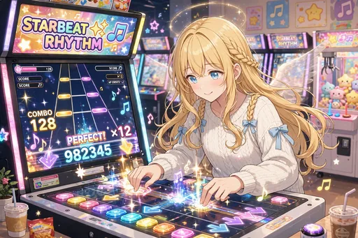
ノーマル
ゲーセンで音ゲーに熱中する場面。流れてくるノーツに合わせて、真剣な表情でプレイしています。天使の集中力が意外なところで発揮される一枚。
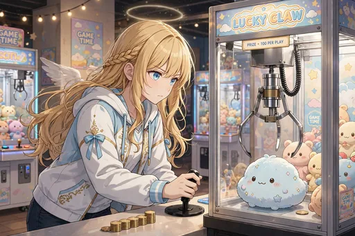
ノーマル
クレーンゲームでぬいぐるみに再挑戦する場面。今度こそと粘る姿は、すっかりゲーセンの常連です。あと少しのところで悔しがるのもお約束。
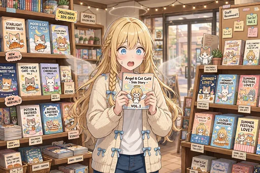
ノーマル
同人ショップで薄い本を手に取り、衝撃を受ける場面。創作への熱量の濃さに、天界にはない文化の深さを知ります。日本橋の奥深さに触れる一枚。
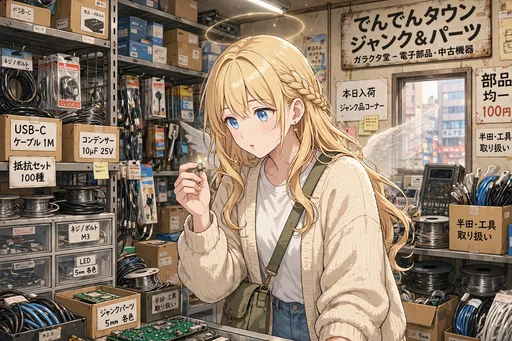
ノーマル
ジャンク屋で部品をじっくり品定めする場面。使い道の分からない品々にこそ宝が眠ると、目利きの顔つきです。掘り出し物探しは日本橋の醍醐味。

レア
コスプレ衣装店で「この天使衣装、本物です」と言ってしまう場面。店員さんを困惑させつつも、衣装の再現度には感心しています。本物の羽根と輪は非売品です。
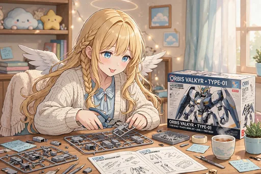
ノーマル
プラモデル作りに挑戦する場面。細かい部品と格闘しながら、少しずつ形になっていく喜びを味わっています。作る楽しさに目覚めた一枚。
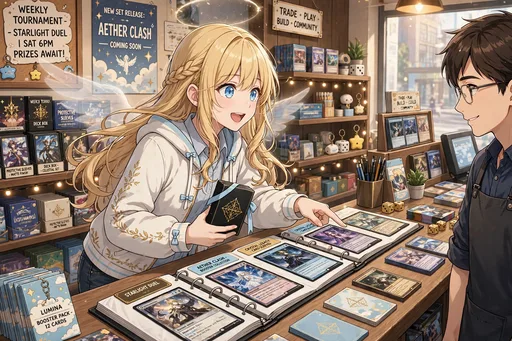
ノーマル
カードショップで店員さんにデッキ相談をする場面。対戦の駆け引きまで楽しむようになり、趣味の幅がまた広がりました。
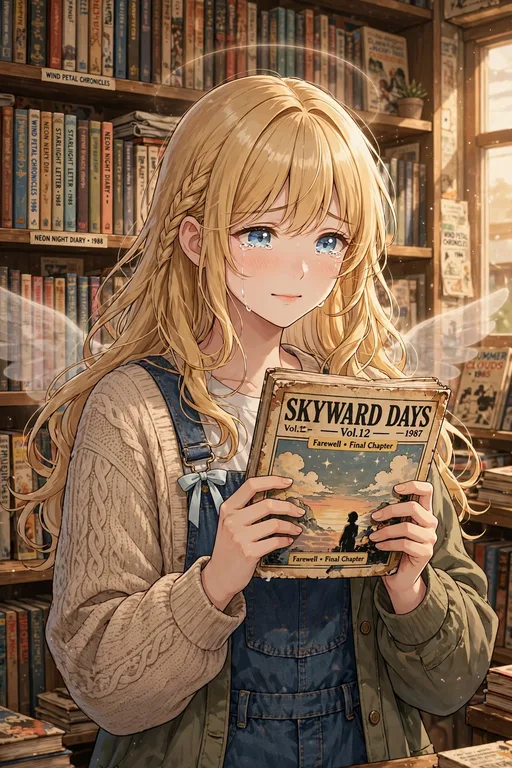
ノーマル
古本屋で昭和の漫画に感動する場面。色あせた背表紙の向こうにある物語に、天使も時間を忘れて読みふけります。
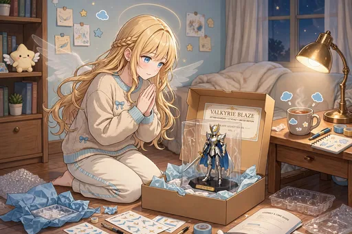
ノーマル
買ってきたフィギュアの開封の儀。箱を開ける瞬間の高揚感は、コレクターなら誰もが通る通過儀礼です。日本橋生活の楽しみのひとつ。
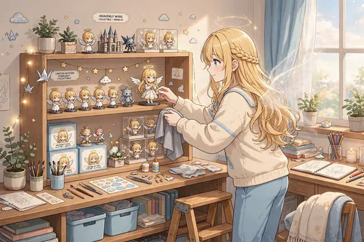
ノーマル
自分のフィギュアを飾るための棚を作る場面。並べ方にもこだわる姿は、立派なコレクターです。部屋が少しずつ「推し空間」になっていきます。
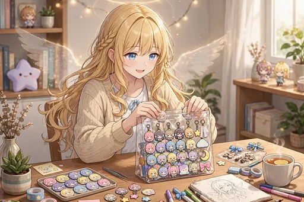
レア
推しのグッズで痛バッグを作る場面。缶バッジの配置に悩みながらも、出来上がりを想像してうきうきしています。推し活の象徴的な一枚。
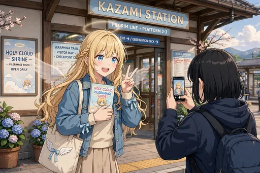
ノーマル
アニメの聖地である駅前で巡礼写真を撮る場面。作品の舞台を自分の足で訪ねる楽しさに目覚めました。聖地巡礼デビューの記念です。
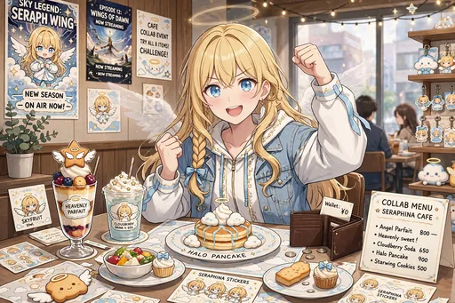
ノーマル
コラボカフェでメニュー制覇に挑む場面。推しのメニューを前に、特典の運試しにも力が入ります。期間限定に弱いのは天使も同じです。
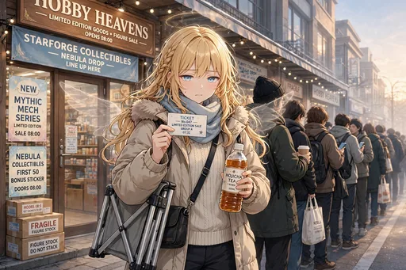
ノーマル
限定グッズの発売日に行列に並ぶ場面。早起きして並ぶのも、推しのためなら苦になりません。常連仲間との会話も行列の楽しみのひとつです。
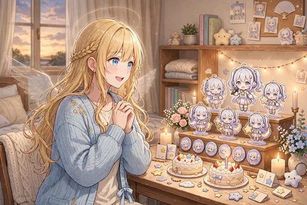
レア
推しの誕生日祭壇を作る場面。グッズと写真を丁寧に並べて、特別な日をお祝いします。愛情の深さが伝わる、推し活の集大成です。
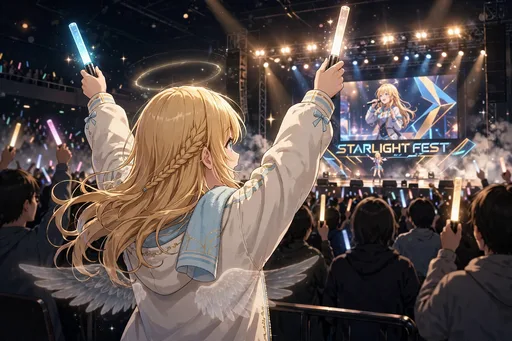
レア
ライブ会場でペンライトを振る場面。周りのファンと一体になって声援を送る時間は格別です。推し活が「現場」にまで広がった一枚。
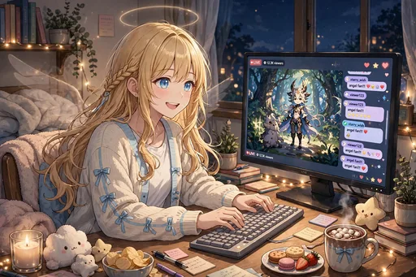
ノーマル
配信を見ながらコメントを打つ場面。画面の向こうの盛り上がりに、自分も参加している実感を味わっています。夜の楽しみのひとつです。
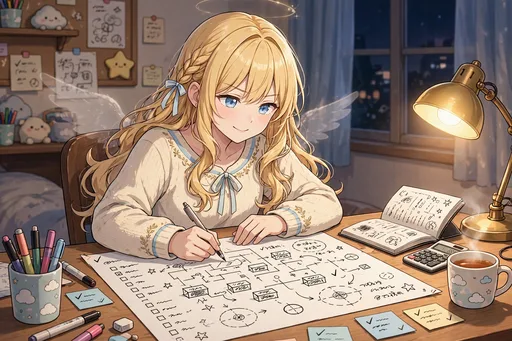
ノーマル
戦利品計画を立てる夜。イベントを前に、カタログとにらめっこして作戦を練っています。本気度の高い、静かな前夜の場面です。
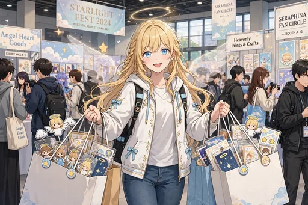
ノーマル
大きなイベント当日、紙袋を両手いっぱいに抱える場面。計画どおりに買い回れた満足感が表情に出ています。第2弾らしい、収穫の日の一枚。
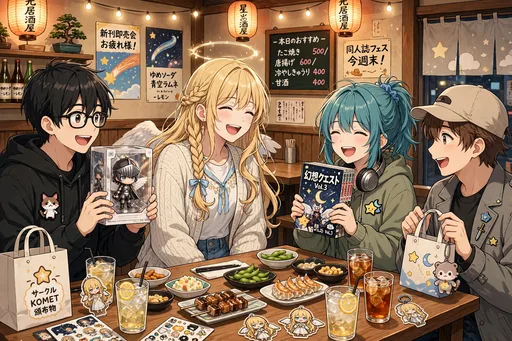
ノーマル
オタク仲間と居酒屋で打ち上げをする場面。戦利品を見せ合いながら語り合う時間は、イベントのもうひとつの本番です。仲間ができた証しでもあります。
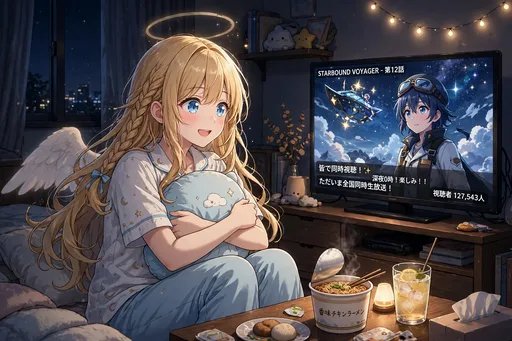
ノーマル
深夜アニメを同時視聴する場面。放送時間に合わせて起きている生活にも、すっかり慣れました。リアタイの緊張感をみんなで共有します。
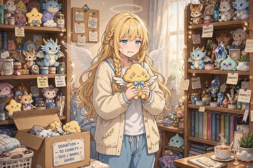
ノーマル
増えすぎたグッズの整理と断捨離に葛藤する場面。どれも思い出があって簡単には手放せません。コレクター共通の悩みに直面しています。
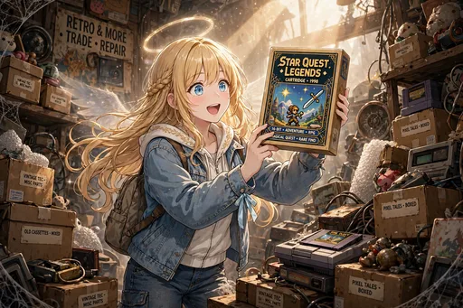
ノーマル
ジャンクの山から掘り出し物を見つけた瞬間。くじ引きのような出会いに目を輝かせています。ジャンク屋通いの成果が出た一枚です。
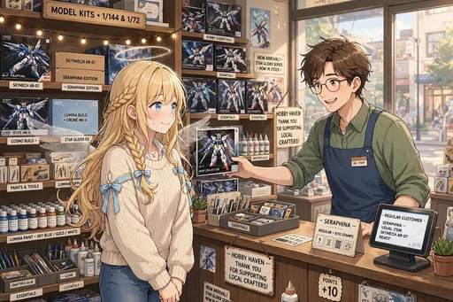
ノーマル
行きつけのお店で店員さんに顔を覚えられている場面。「いつもありがとうございます」の一言に、常連の実感が湧きます。日本橋に根を張った証拠です。

レア
日本橋のネオンに佇む夜の場面。賑やかな街の光の中で、少しだけ物思いにふけっています。染まりきった街と自分の距離を感じる一枚。
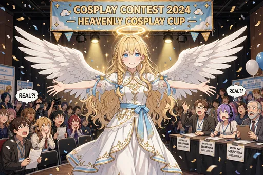
レア
本物の羽根でコスプレ大会に参加する場面。作り物ではない翼に会場がざわつきますが、本人は優勝を目指して本気です。
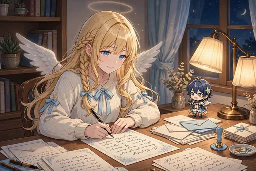
ノーマル
推しへのファンレターをしたためる場面。一文字ずつ気持ちを込めて書く姿は、ファンとしての誠実さそのものです。

激レア
私服で紙袋を手に笑顔を見せる、常連の貫禄の一枚。第1弾の降臨直後とは見違えるほど街に馴染みました。第2弾の締めくくりを飾るキービジュアル級の場面です。